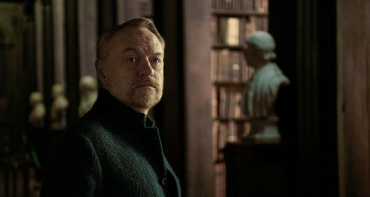

A long time ago, in a galaxy far, far away, Isaac Asimov wrote one of the most beloved science-fiction sagas of all time. Foundation, a sprawling history of the far future, has now been adapted for the bingewatch generation. But the source material Apple is really drawing on with this $45 million epic is far more recent than the Asimov novels, the first of which was published in 1951.
Foundation (Apple TV+, streaming from today) is Game of Thrones in space. It’s even filmed in Ireland, with Limerick’s Troy Studios taking the place of Game of Thrones’ Belfast HQ. And, in Jared Harris, it stars the scion of one of the greatest sons of the Treaty City, Richard Harris.
Foundation is ponderous, gorgeously wrought and has very little to do with Asimov. And with so much CGI you’d be hard pressed to tell it was made in Ireland – although there is a starring role for the iconic Long Room library at Trinity College Dublin, as a stand-in for a reading room in the imperial capital of Trantor.
Lee Pace is chewing all the scenery in Foundation. And although that puts daylight between the series and Isaac Asimov’s thoughtful novels, it also brings an essential spark
Trantor is the centre of life, the universe and everything. It’s a city the size of a planet, ruled over by Emperor Cleon, who has audaciously divided himself into three personalities.
These are Brother Dawn, a child, Brother Day, a middle-aged man, and Brother Dusk, a greybeard. And, as the story begins, Emperors One, Two and Three sense trouble ahead. A pesky mathematician has produced a formula that he claims proves the empire is about to enter a long decline.
The expert, Hari Seldon, is a familiar Jared Harris character: a harried Everyman with a meek demeanour under which lurk volcanic tide pools. He has acquired a new apprentice, Gaal Dornick (Lou Llobell), although his timing could have been better, as both are arrested by the emperor on her first day on the job.
The best and worst thing about Foundation is Lee Pace as Cleon in his Brother Day guise of robust early middle-age. Pace’s highest-profile role was as Ronan the Accuser in Guardians of the Galaxy: a blue-faced alien who dreamed of conquering the galaxy and also knew all the words to Life Is a Rollercoaster.
He’s chewing all the scenery in Foundation. And although that puts daylight between the series and Asimov’s thoughtful novels, it also brings an essential spark. Cleon burns up the screen like a grown-up Prince Joffrey with the safety catch removed – and thank goodness for that. Otherwise Foundation is a big, empty space epic that seeks to cash in on the Asimov legacy but is ultimately built on sand.
Read from source